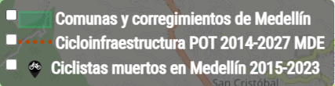

SIGenBici
Te damos la bienvenida al mapa ciclista SIGenBici, un proyecto de cartografía colaborativa de Medellín y el Valle de Aburrá con herramientas geoespaciales libres y datos abiertos.
El botón en la esquina superior izquierda del mapa permite acceder a los controles para activar o desactivar las capas de interés:
Cicloinfraestructura (ciclorrutas, ciclobandas, carriles compartidos, cicloparqueaderos, etc.).
Percepciones ciclistas (zonas agradables, seguras o peligrosas, problemas de infraestructura y otras).
Datos oficiales (cicloinfraestructura según el POT 2014-2027 MDE, muertes de ciclistas en Medellín).
SIGenBici es un proyecto de la Corporación Colectivo SiCLas y el Semillero GeoLab (Grupo de Investigación GeoLimna de la Fac. de Ingeniería, U. de Antioquia).
¿Cómo usar el mapa?
Utiliza el botón en la esquina superior izquierda del mapa para activar los controles de capas.
Capas de cicloinfraestructura
Marca las casillas según las capas que quieras ver en el mapa.
Luego de activar las casillas de EnCicla, cicloparqueaderos o talleres, acerca el mapa o haz clic sobre los círculos azules para ver la ubicación de los puntos de interés.
Capas de puntos de percepciones ciclistas
Marca las casillas según las capas que quieras ver en el mapa.
En el caso de los puntos de percepciones ciclistas, acerca el mapa o haz clic sobre los círculos verdes y rojos para ver la ubicación de los puntos de percepciones positivas y negativas, respectivamente.
Capas de datos oficiales
Marca las casillas según las capas que quieras ver en el mapa.
Fuentes de los datos
Los datos de cicloinfraestructura y EnCicla se obtienen de la base de datos de OpenStreetMap (OSM). Los datos de talleres y cicloparqueaderos los actualizaremos colaborativamente en OSM durante el 2024.
Los datos de percepciones ciclistas fueron recogidos en la segunda fase del proyecto SIGenBici (2020) mediante una encuesta en línea. Si quieres aportar información para enriquecer el mapa, puedes agregar tus rutas frecuentes o puntos de percepción.
Los datos oficiales fueron obtenidos del portal de datos abiertos de Medellín.
Cicloinfraestructura en Colombia
Para la tipología de cicloinfraestructura se utilizan las definiciones existentes en la Guía de Cicloinfraestructura para Ciudades Colombianas, que distingue dos grandes categorías: vías ciclistas y vías cicloadaptadas (ver pág. 51 y 76 de la guía).
Vías ciclistas: segregadas y exclusivas para bicicletas
Ciclorrutas
Vías reservadas exclusivamente para la circulación en bicicleta, segregadas físicamente del resto del tránsito (motorizado) y también de los peatones mediante algún tipo de segregación física (cambios de altura o instalación de elementos físicos permanentes).
Ciclobandas
Vías reservadas exclusivamente para la circulación en bicicleta y segregadas visualmente, es decir, a través de demarcación con pintura y otros dispositivos de canalización de tránsito (hitos, balizas, tachones, bordillos, o elementos similares).
Vías cicloadaptadas: uso compartido con otros modos de transporte
Bandas ciclopreferentes

Banda en calzada reservada preferentemente a la circulación de bicicletas y delimitada mediante una línea discontinua. Vehículos motorizados y bicicletas pueden cruzar la línea si la situación del tráfico así lo requiere, siempre y cuando no se incomode ni se ponga en peligro al ciclista.
Carriles ciclopreferentes

Carril de la calzada de uso compartido con indicación de la circulación del ciclista por el centro y limitación de velocidad.
Fuente: Ministerio de Transporte de Colombia. (2016). Guía de ciclo-infraestructura para ciudades colombianas. (C. Pardo & A. Sanz, Eds.). Bogotá D.C.: Ministerio de Transporte de Colombia.